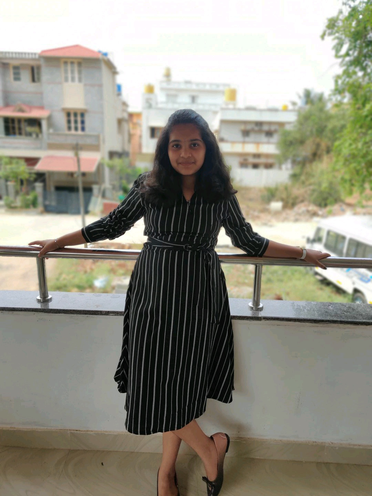

My Self Deepali And I Am Studying 7th In Podar International School
I was Born i 2009 On April 22 Which special to me because On My Brithday
It is earthDay Which Is celebrated Every Year.

Inspiration
Inspiration.... It Does Not Come When You Say I Want inpiration Their Must Be A Good Reason
Why You want to Become Like Him or Her and why choose her.
My Inspiration is Bille eilish Because I love singing and She is best known For her albums
She is My inspiration because she if different from Everyone because She have lot of money
But leads with a simple life She have millions of money to spend but she where's shorts and top
Even for the huge conserts I love her soo much....
My Hobby
My Hobby is to Singand i have been singing for almost 1 year and i have known 136 songs
And i can sing all of them...